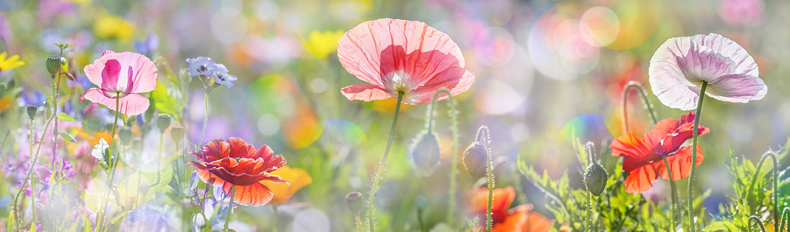

日本の春は、暖かく気候の良い季節です。桜が咲く時期になると、桜の木の下でお団子を食べながらお花見をします。春は、寒い冬から気温が上がり始め、朝晩はまだ肌寒さはあるが次第に日中は暖かくなる時期であり、秋と並んで一年の中では最も気候の良い穏やかな季節とも言われます。雪や氷が溶け、植物が芽を出す時期でもあります。寒さが次第に緩み、草木が萌え芽ぐみ、花々がつぼみをつけ満開になります。日が永くなり地中の虫が動き始め、桜が散り、次第に木々の緑が濃さを増し、暑い日が増えてきて、終わります。
日本の夏を特徴づける気象として、梅雨や雷雨、年によっては旱魃や猛暑などがあります。雷は梅雨期間中に現れ、短時間に大量の雨を激しく降らせます。一年を通して、夏は多くの気象災害が発生します。また、日本の夏はとても蒸し暑く、日中の気温はおおよそ30℃～35℃程度ですが、湿度が高いため体感気温は高く感じられます。近年では温暖化が深刻な問題となり、熱中症は命の危険をもたらすほどです。こまめな水分補給は欠かせません。
夏の暑さがやわらぎ、過ごしやすい季節となります。日中は暑いですが、朝晩に肌寒さを覚えたり吹いてくる風に爽やかさを感じたりします。夏の蝉は次第に鳴りをひそめ、赤とんぼの群れや虫の声が耳にとまるようにもなります。夏休みが終わって新学期が始まり、運動会や文化祭などの行事が。あります。稲が黄金に色付き、栗、梨、葡萄などとりどりの果実が店頭を飾ります。台風がしばしば日本を襲い、秋雨が永く続くこともありますが、晴れた空は高く澄み渡り俗に「天高く馬肥ゆる秋」ともいわれます。夜が長くなり、月や星を賞でたり、読書や夜なべにいそしんだりする。朝寒夜寒が段々とつのって、昼夜の温度差が大きくなり、野の草には露が置き、木々は紅葉してくる。色付いた葉が散りはじめると、重ね着が増え、暖房が入り、秋も終わりに近づきます。
冬という季節が生まれるのは、太陽高度の差によって気温が変わることが大きな原因です。地球が地軸を傾けて公転しているために、同じ地点でも季節により太陽高度が変わり、太陽高度が低くなると冬になる。赤道に近い低緯度地域では、季節による太陽高度の差が小さいので冬に目立った気象の変化はない。また、極地や高緯度地域では冬に太陽が昇らない極夜という現象が起こる。
〒920-0936 石川県金沢市兼六町１
兼六園は石川県金沢市に存在する日本庭園であり、国の特別名所に指定されています。